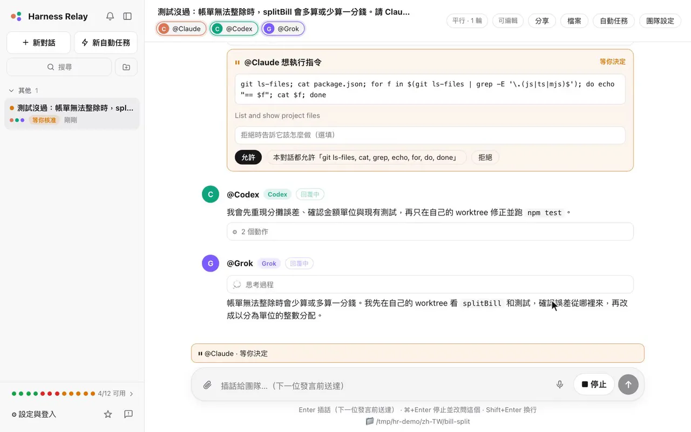
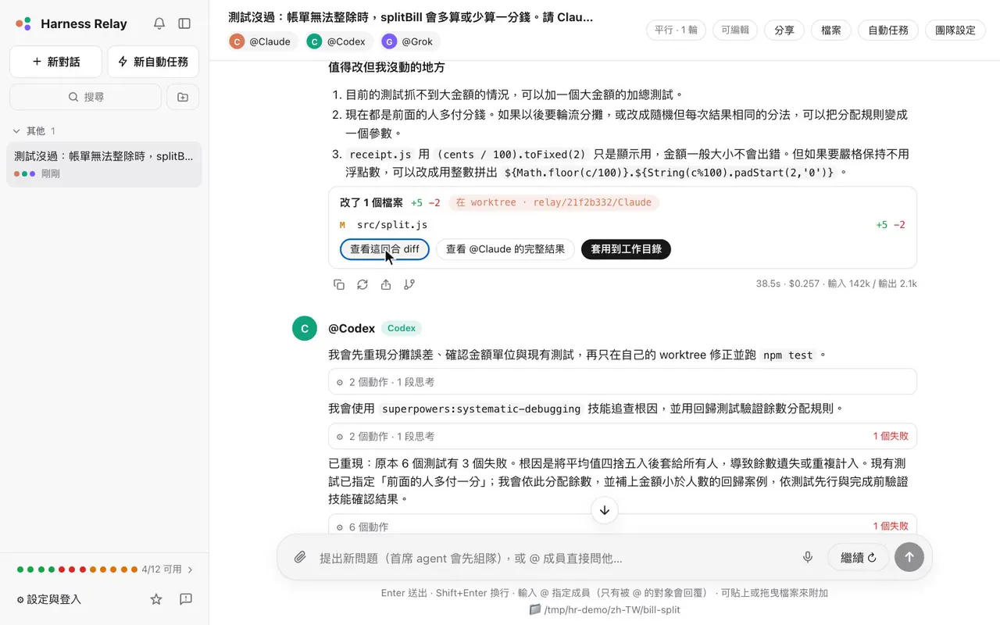

權限與核准
agent 自己能做什麼，由你決定。超出範圍的事會以卡片出現在對話中，等你決定；它們對檔案的每項修改也都會列出來，方便你檢視。
三種權限
每個對話有一個檔案權限，所有成員共用。在新對話頁選擇，之後也可以在團隊設定修改。
| 權限 | agent 不必問就能做的事 |
|---|---|
| 唯讀 | 讀檔、搜尋與上網查資料。不會修改任何檔案。 |
| 可編輯 | 再加上修改工作目錄裡的檔案，以及執行測試、建置等專案指令。不包括推送與發佈。 |
| 完全存取 | 什麼都能做，不再詢問。請只在你信任的資料夾使用。 |
確切哪些事不必問，各個 agent 稍有不同：沒有沙箱的 agent，在完全存取以下執行任何指令前都會先問你，連測試與建置也一樣。
在可編輯模式下，測試、建置與專案腳本執行的程式碼，是 agent 改得到的。可編輯只用在你信任的程式碼；不信任的程式碼或指示，請用唯讀。你的家目錄本身不能用可編輯模式：請選一個專案資料夾。
權限範圍以外的動作
agent 想做權限沒涵蓋的事，例如安裝套件、推送程式碼，或寫到工作目錄以外的地方時，由對話的權限範圍以外的動作設定決定怎麼處理：
- 詢問我（預設）：在對話中問你，agent 會等你回答。
- 自動拒絕：動作會直接被拒絕；agent 會被告知，並改用其他方式。
完全存取沒有權限範圍以外的事，所以不會顯示這個設定。
核准卡片
選詢問我時，agent 的回覆會出現一張卡片：它想做什麼（確切的指令、檔案、網址或主機），以及為什麼。如果允許它會讓指令在沙箱外執行，卡片也會註明。

- 允許：只允許這一次。
-
本對話都允許「…」：這次以及之後類似的請求，在這個對話裡都直接允許。指令的話，指的是同一個程式與子指令，例如
npm install。 - 拒絕：可以先寫下 agent 該改做什麼。有些 agent 會收到你的說明並繼續；其他的只知道你拒絕了，或會直接結束這一回合，這時請在下一則訊息說明要怎麼做。
卡片等待時，輸入框上方會有一列提示指向它，側邊欄把對話標為等你核准，瀏覽器分頁標題也會顯示有幾個對話在等你。按停止會拒絕所有還在等待的請求。
沙箱做了什麼
在完全存取以下，大多數 agent 會在沙箱裡執行指令；沙箱是作業系統圍在程式外面的一道圍欄。它只讓指令寫入工作目錄與暫存資料夾，也擋住它們碰你的瀏覽器資料和 Harness Relay 自己的資料庫。依 agent 不同，沙箱也會讓指令連不上網路，或在連到新主機前先問你。
- 開源 agent 在 Harness Relay 自己的沙箱裡執行。
- 沒有沙箱的 agent，改成每個指令執行前都先問你。
- 沙箱缺少需要的元件時，指令會失敗，絕不會改到沙箱外執行。Harness Relay 可以幫你安裝缺少的元件：見安裝。
每個沙箱涵蓋的範圍依 agent 與作業系統而不同。在原生 Windows 上，只有 Codex 與 Copilot 的沙箱能用，Claude Code 在那裡執行指令時沒有沙箱。技術文件逐一列出各個 agent 的情況。
你在團隊檢查列為受保護路徑的檔案也會被擋：Claude Code、Codex、Cursor、Copilot、Antigravity 和開源 agent 會在寫入前就拒絕，各自擋得到的範圍不同（完全存取時較少；Linux 上一輪中途才建立的檔案不一定擋得到）。讀取仍然可以。Grok 和 Muse Code 還不會拒絕；沒擋下的，團隊回答後仍會找到。
待送出匣
內建的 Obsidian 工具每次提議寫入 Markdown 筆記，都會在待送出匣等你確認，即使使用「完全存取」也一樣。檢閱檔案路徑與內容後，按建立筆記、儲存變更或捨棄。如果檔案在提議編輯後已有變動，卡片會說明原因並保留較新的版本。檢閱 Obsidian 筆記編輯
agent 用 Harness Relay 自己的工具把東西送給別人時，例如透過 Relay 發送 Slack 或 Teams 訊息、寄信或寄出活動邀請，不管權限是什麼，都不會在它那一回合送出。它的回覆會出現一張卡片，一個欄位一個欄位列出要送出的內容，和實際送出的一樣：
- 送出：照顯示的內容，用你的帳號送出。
- 捨棄：丟掉它。
在你決定之前，這個對話會標為等你核准，你也會收到通知，和核准一樣；agent 不會停下來等，所以你可以晚點再送出。工具：瀏覽器、郵件與行事曆
檢視與套用修改
agent 修改檔案時，它的回覆最後會有一張卡片列出這些檔案，各自標示 A（新增）、M（修改）或 D（刪除），以及增減的行數。查看這回合 diff 會顯示 agent 在這一回合確切改了什麼。
平行模式：挑一份結果
平行模式中，每個 agent 都在自己的副本（git worktree）裡工作，不會互相覆蓋，你的工作目錄也不會被動到。卡片上會標示在 worktree，該 agent 最新的卡片還有：
- 查看 @名稱 的完整結果：這個 agent 從這一輪開始以來改的所有東西。
- 套用到工作目錄：把這份結果複製到你的資料夾。不會 commit：請用你慣用的工具檢查修改，再自己 commit。

套用其中一份結果後，其他結果會標示為過時，下一輪會從更新後的資料夾開始。如果你的資料夾改過的地方和這份結果衝突，就什麼都不會套用，並告訴你原因：請 agent 依目前的狀態重做一次。
對話有團隊檢查時，Harness Relay 會在套用結果後的工作目錄副本中檢查。檢查未通過時，可以修正後重試，或選仍要套用。 如果結果修改了指令會讀取的設定，檢視後可選確認後執行指令，通過就套用。
你的資料夾怎麼保持安全
-
在可編輯與完全存取模式下，還不是 git repository 的工作目錄會先變成一個（
git init），每項修改才記錄得下來。Harness Relay 從不 commit 到你的分支。 - 圓桌與接力模式中，agent 輪流直接修改你的資料夾，每則回覆都記錄它改了哪些檔案。這段期間，其他對話不能寫入同一個資料夾：在那裡送出訊息時，會告訴你這個資料夾正在修改中，直到這個對話做完（或你停止它）。
Harness Relay 會記錄改了什麼，但不會幫你復原：編輯先前的訊息或重試回覆，都不會還原那些回覆改過的檔案。想保留的修改請 commit。